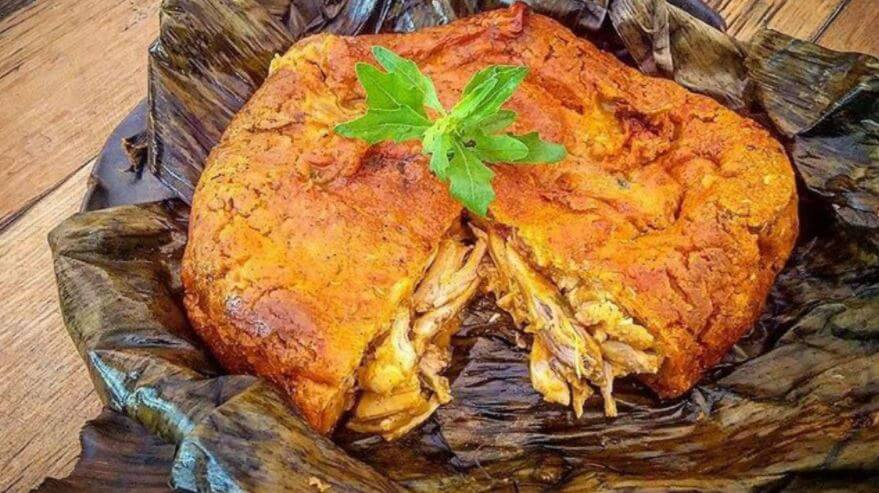

Pastel ceremonial o tamal monumental de masa de maíz sazonada con manteca y frijol tierno espelón, relleno con guiso de pollo o cerdo marinado en recado rojo (achiote) y espesado con caldo (k'ol). Se envuelve en hojas de plátano y se cocina de manera tradicional dentro de un horno subterráneo excavado en la tierra con leña y piedras calientes proveniente de Yucatán (Fiesta del Hanal Pixán o "Comida de las ánimas").